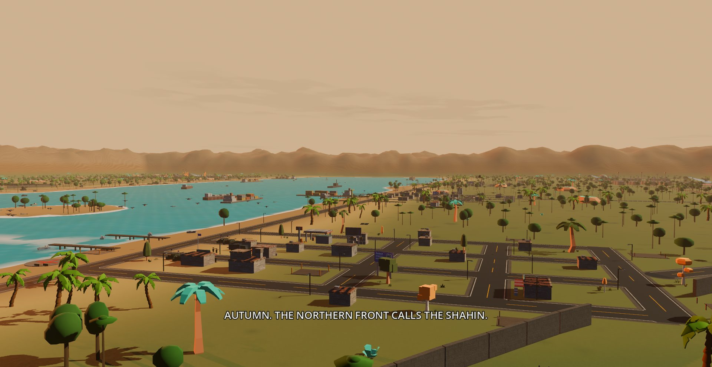
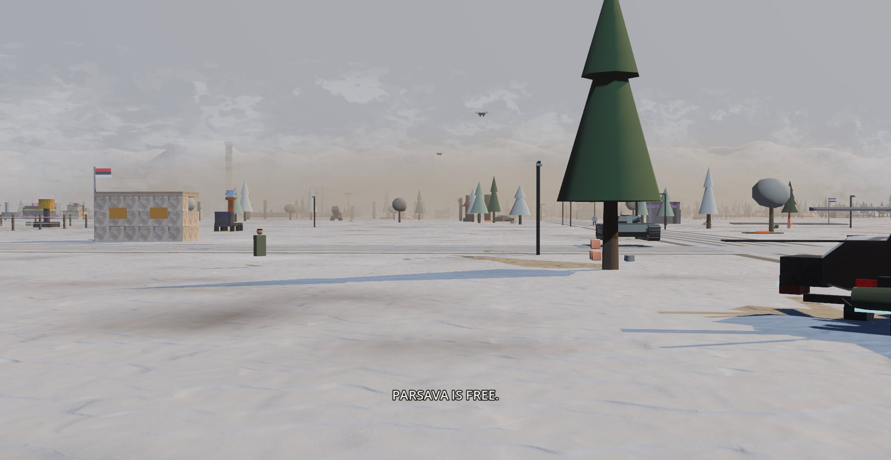

The war that never happened.
A 1990s that never was. In the Republic of Parsava — a fictional country on the Gulf — the oil, the radars, and the television all answer to Marshal Rashid al-Ghazi, a foreign-born strongman ruling Persian soil. When his Guard fired on protesters, one battleship's crew stopped taking orders. Every name in this war tells you whose side it's on — ours speak Persian, his wear the regime's borrowed styling — the music is contraband, the state news calls us pirates, and the villages cheer when we fly over.

THE MUTINY
High noon in the Gulf of Simorgh: the admiral walks the plank, the Simorgh runs up the tricolor, and the squadron raises a beachhead on the regime's own coast — block by block, under a sky full of dust. By spring's end, the coast is ours.
Campaign I — Operation Tondbad →
THE STRAIT
The Marshal and his foreign backers close Tangeh-ye Hormoz, and Bandar-e Azadi holds out on rations and salvage. Carry the revolution port by port, break open the Zendan, and get the enriched material out without turning the coast to glass. The strait opens.
Campaign II — Operation Tangeh →
WORLD WAR
The reformed USSR and Pyongyang pick their side, and the word nobody wanted finally gets said out loud. On the Caspian front the relay war decides who owns the sky while an armored train prowls the coastal rails. Then the snow starts falling — and doesn't stop for three winters.
Campaign III — Operation Shahin →
FIRST LIGHT
Three years on, the Azadi movement is the government of Parsava — and al-Ghazi has wrapped the old capital in a war machine that fights on without him. Four contingents. One wall. Twenty-two minutes on the silo clock. At first light: Parsava is free.
Campaign IV — Operation Azadi →